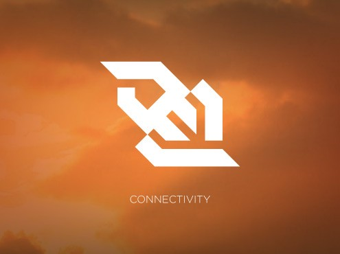

Conectividad

Web Sockets
Permite crear una conexión permanente entre la página y el servidor e intercambiar datos no HTML a través de ese medio.
Eventos de servidor enviados
Permite a un servidor "colocar" eventos en un cliente, en lugar del clásico paradigma donde el servidor podría enviar datos sólo en respuesta a la petición de un cliente.
WebRTC
Esta tecnología, donde RTC es sinónimo de comunicación en tiempo real, permite conectar con otras personas y servicio de videoconferencia de control directamente en el navegador, sin necesidad de un plugin o una aplicación externa.